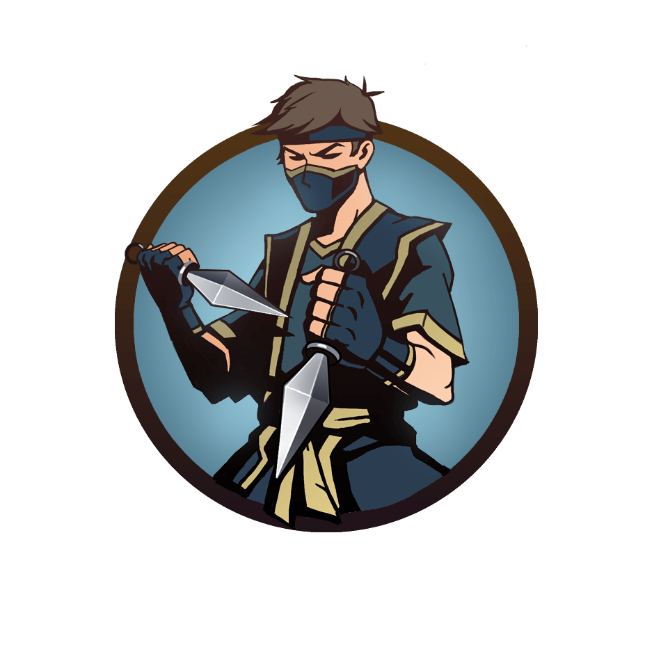
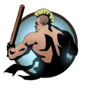
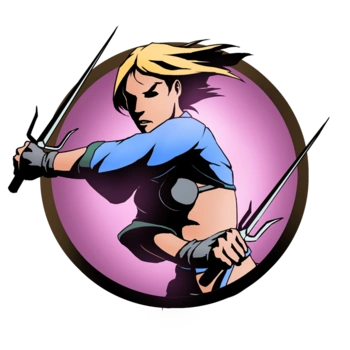
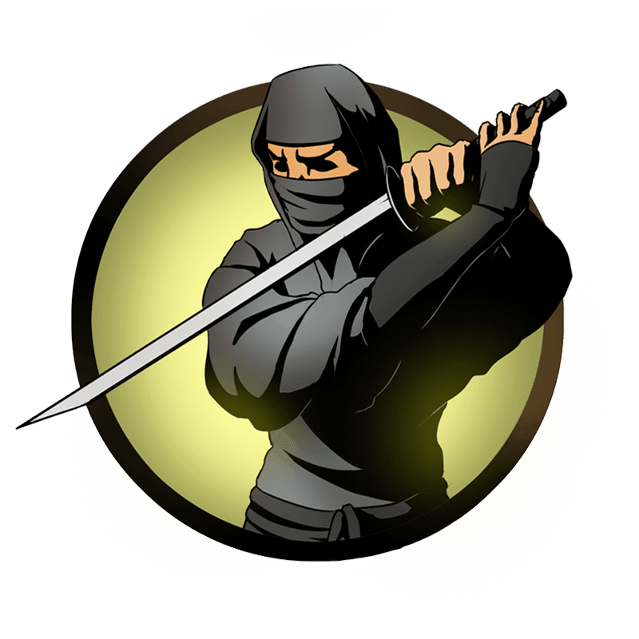
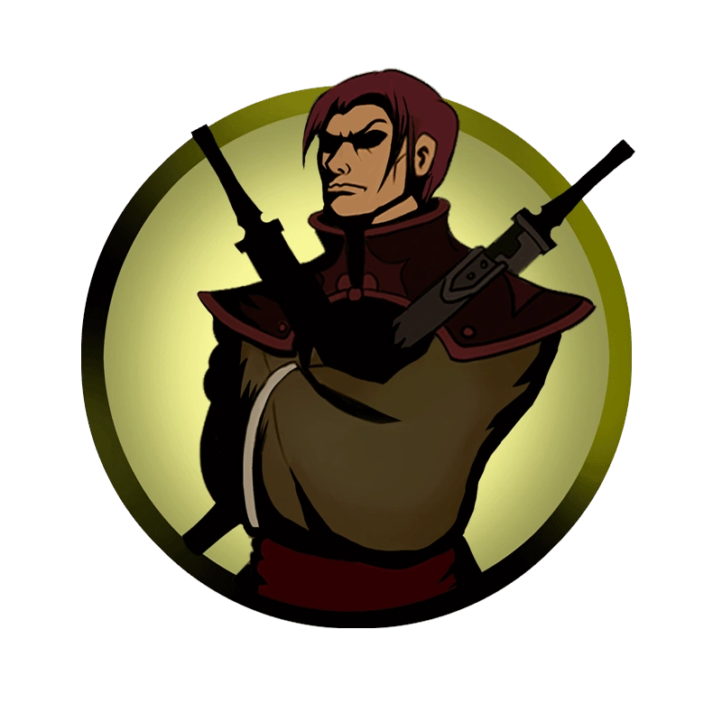

История
О том, кем был Рысь до создания Ордена ассасинов, где он является главой, в сюжете оригинальной Shadow Fight 2 не раскрывается.
Буйный и крайне самодовольный демон. После своего поражения Тени он в недоумении отдаёт ему печать, считая, что всё, что нужно было Тени, – главенство над Орденом.
После того как Тень одолевает всех демонов и подходит к Вратам Теней, Рысь получает письмо от Сёгуна о просьбе собраться всем демонам у Врат, дабы остановить Тень и предотвратить их открытие.
После очередной неудачи Рысь возвращается в своё логово, где его ждет Тень.
Рысь понимает, что герой желает уничтожить все печати и вновь открыть Врата, чтобы спасти жертву Титана – Мэй.
После проигрыша, Рысь предупреждает, что Тень зря в это ввязался, что Титан — крайне могущественное и непобедимое существо.
«Он способен влиять на мысли, изменять воспоминания, кто способен сравниться с такой силой? Ты погубишь всех нас, безумец!»
Телохранители:
Шин
-самый первый телохранитель, с кем встречается игрок. Он является самым слабым членом Ордена ассасинов, из-за чего Рысь и предложил Тени сразиться с ним для проверки в начале игры. Борется недоступными в магазине кинжалами. Единственный телохранитель.

Кирпич-первый телохранитель, с которым Тень сражается по своему желанию.
Высокомерен и нагл.

Игла-предана своему Ордену и стремится избавиться от Тени любыми способами. После своего поражения даёт напутствие, которое, тем не менее, не повлияет на исход битвы с Рысью.

Призрак-был одним из тех, кому «удалось одолеть Рысь». Однако, сняв с него маску, он увидел соломенное чучело, после чего почувствовал стальные когти у своей шеи. С тех пор Призрак служит ему «правдой и верой»

Щегол-он не горит желанием разделаться с Тенью. Он далёк от интересов Ордена, в котором он видит «средство разогнать скуку и отточить свои навыки владения мечом». После поражения Тенью ушёл из Ордена: «Как же мне наскучила такая жизнь, Орден… Я вернусь туда, где мне самое место – в высший свет»
